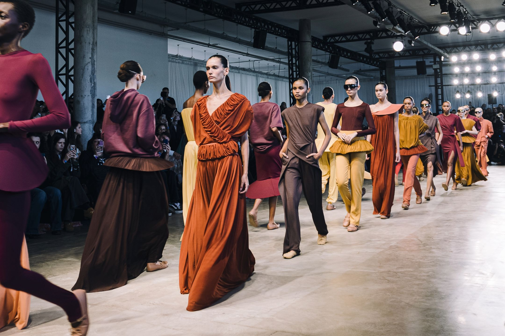
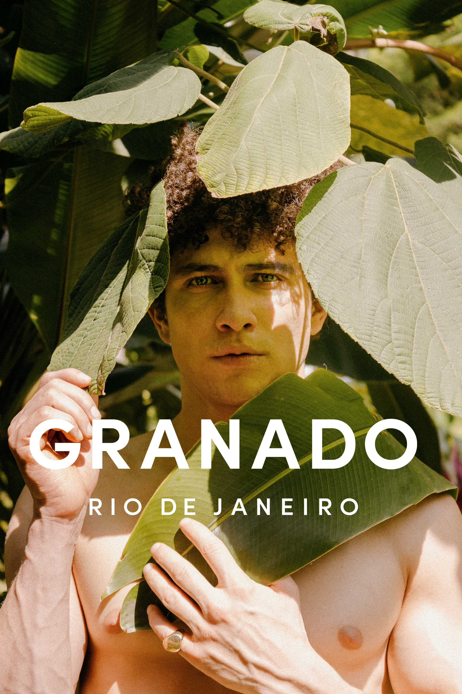

Editorial de Moda
Conceito visual do início ao fim — referências, locação, styling, direção de modelos e edição final com identidade clara.
Fotografia de Moda · São Paulo
Narrativas visuais construídas com intenção. Editorial, campanha e retratos fashion com estética contemporânea e direção criativa completa.

Especialidades
Conceito visual do início ao fim — referências, locação, styling, direção de modelos e edição final com identidade clara.
Imagens que conectam produto e identidade. Campanhas sofisticadas que comunicam o posicionamento da sua marca.
Ensaios com foco em composição, luz e styling. Para modelos, atores e profissionais criativos.
Trabalhos

Sobre
Fotógrafo de moda baseado em São Paulo com olhar criativo focado em direção estética e narrativa visual. Meu trabalho mistura moda, street style e arte, com forte influência editorial.
Produzo ensaios do início ao fim — pesquisa de referências, escolha de locações, produção de looks, direção de modelos e edição final.
Agendamento
Escolha o tipo de projeto e entre em contato
Agendar via WhatsAppRetorno em até 24h · São Paulo e região · Viagens sob consulta